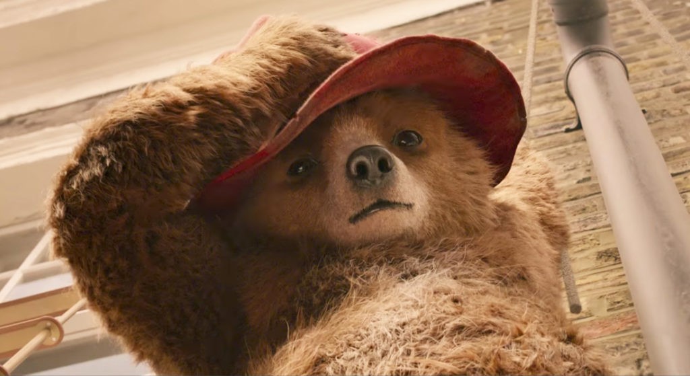

I'm currently studying for my Bachelors in Computer Science and Mathematics at the University of Montreal. I'm originally from Mexico and I am expected to graduate in December 2023. Some of my interests are watching movies and listening to music. I'm always looking for new challenges and opportunities to learn and grow. I am passionate about using my skills and knowledge to make a positive impact in the world, and I hope to use my education to pursue a career in machine learning.
Thank you for visiting my website!
I hope you enjoy your time here and find something interesting.
My interests
Music
I enjoy listening and exploring different genres and artists. Some of my favorite genres at the moment are
latin rock, indie music, and R&B. Currently, my favorite artist is the Argentinian songwriter Gustavo Cerati.
I really like the way he tells stories through his lyrics. I use both Apple Music and Spotify to discover new music
and keep up with my favorite artists.
Feel free to follow me and share any new music that you think I might enjoy.
Movies
Some of my favorite directors are Guillermo del Toro, Sofia Coppola, and Charlie Kaufman. My all-time favorite film is Paddington 2 I just love that little peruvian bear that has taught me so much about life. If you're interested in seeing my opinions about films, you can follow me on Letterboxd where I share my thoughts about the movies I watch. I always enjoy discovering new films and directors.
